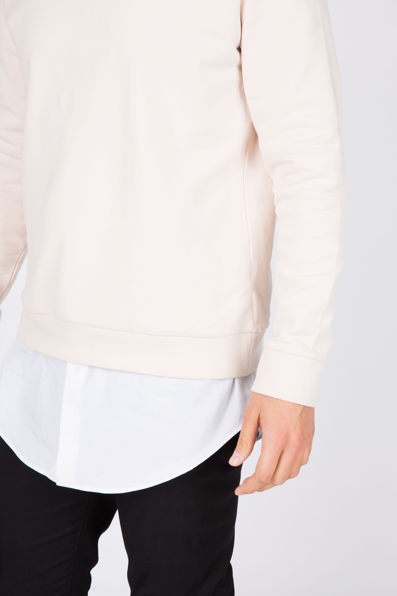

패션의 종류와 옷 패션의 종류에는 아메카지 미니멀리즘 스트릿 클래식 그런지, 최근유행하는 딘드밀리룩 등 수 많은 종류가 있습니다.
미니멀리즘
컬러 역시 한 가지 혹은 동일한 색상이지만 톤이 다른 톤온톤 배색을 활용해 최소한의 컬러만으로 스타일링 해 심플함을 추구하는 것이 좋다. 컬러를 능수능란하게 잘 다루는 사람이라면 알록달록한 스타일이 독특하고 개성있게 보일 수 있지만, 대부분은 통일감 없고 촌스러워 보이기 일쑤다. 하나의 컬러가 그라데이션이 된 듯한 느낌으로 비슷한 컬러로 조합해 스타일링 한다면 누구에게나 잘 어울리는 세련된 미니멀리즘 패션을 완성할 수 있다. 특히 베이지, 브라운, 카멜 컬러를 활용한 룩은 노란 피부를 가진 동양인과 가장 잘 어울리며 우아한 분위기를 연출해준다.
